10 из 10, редко встречаешь человека, который работает не для того, чтобы заработать, а для кайфа.
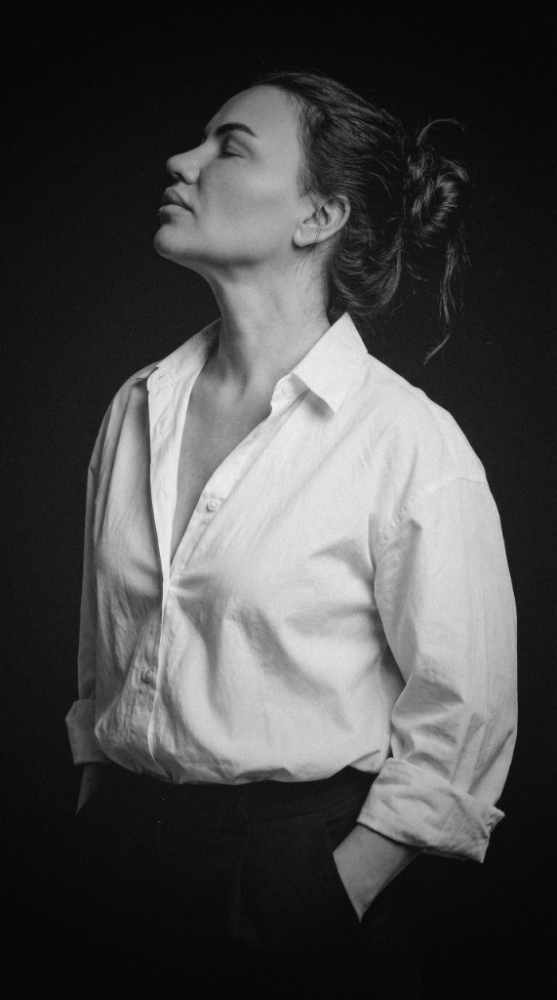
Почему я?
Привет, я Ольга — фотограф с большой любовью к своему делу.
Моя цель — запечатлеть самые яркие моменты вашей жизни и создать неповторимые кадры, которые будут хранить тёплые воспоминания на долгие годы.
-
Индивидуальный подход
Индивидуальный подход к каждому клиенту и комфортная атмосфера на съёмке.
-
Живые эмоции
Умение уловить настоящие эмоции и передать атмосферу момента.
Отзывы
Портфолио
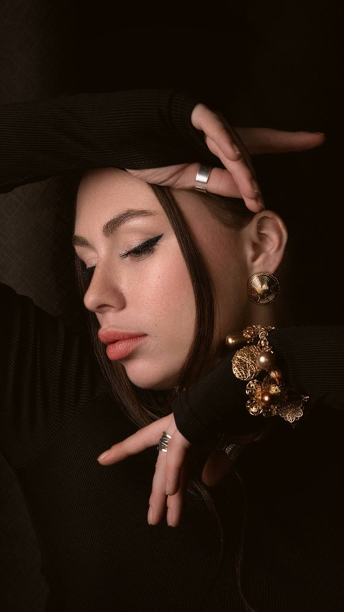
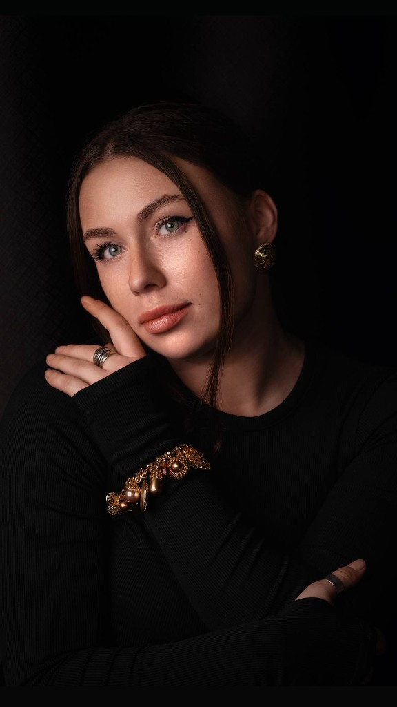
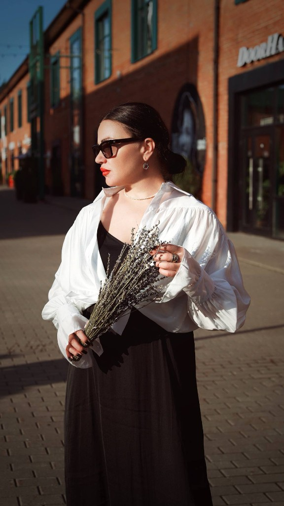
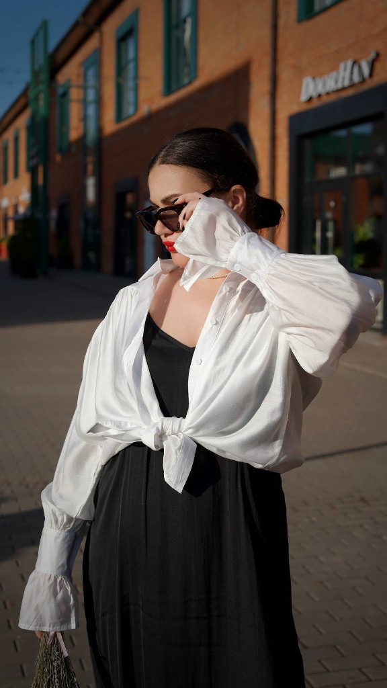
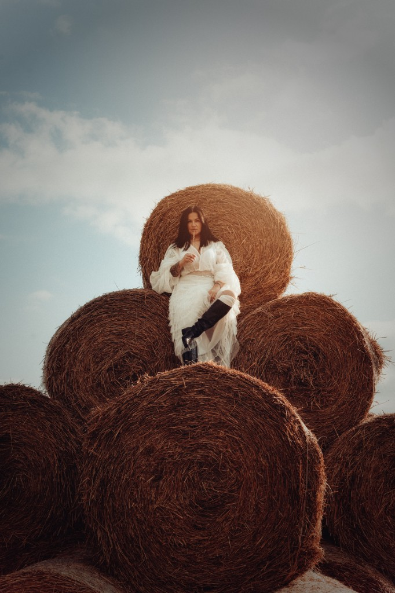
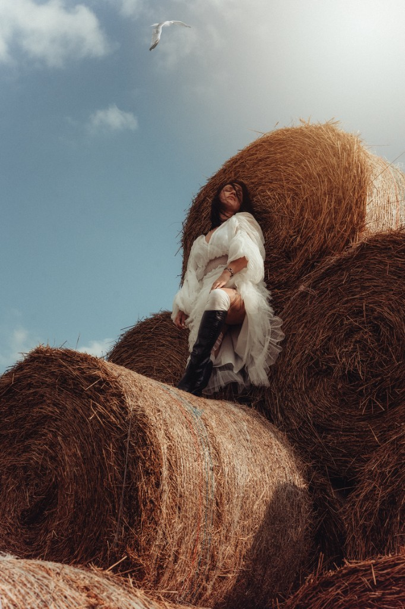
ИИ портфолио
Работы, созданные с помощью нейросетей
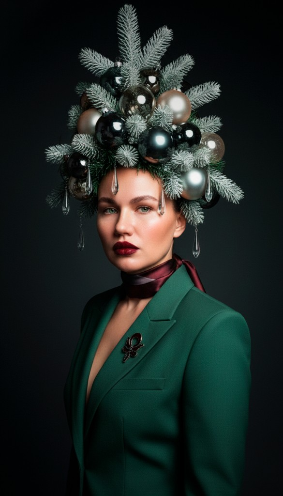
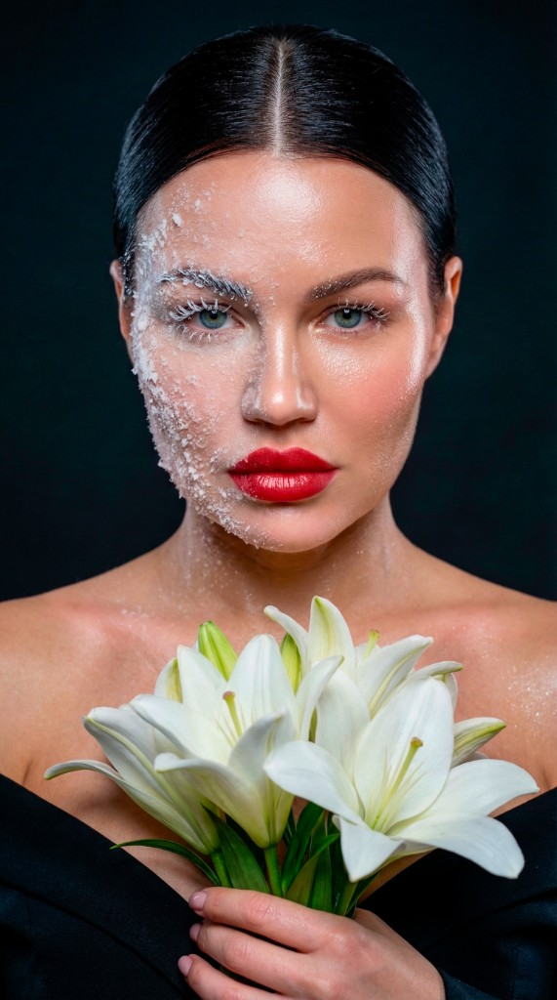
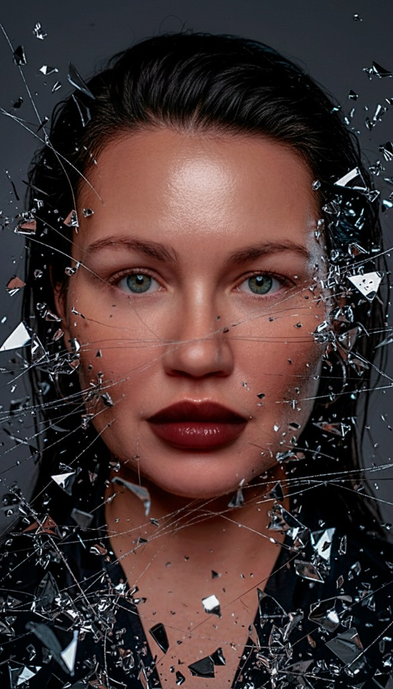
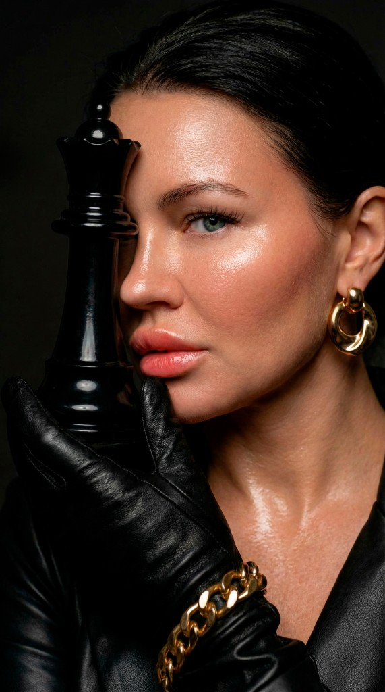
Услуги
Фотосъёмка
Портретная и предметная съёмка, подбор света и композиции под вашу задачу.
Ретушь
Аккуратная обработка: тон, цвет, детали кожи и одежды без потери естественности.
Реставрация фотографий
Восстановление повреждённых и выцветших снимков, устранение дефектов и пятен.
ИИ-креатив
Идеи и визуалы с опорой на нейросетевые инструменты — от эскиза до финального кадра.